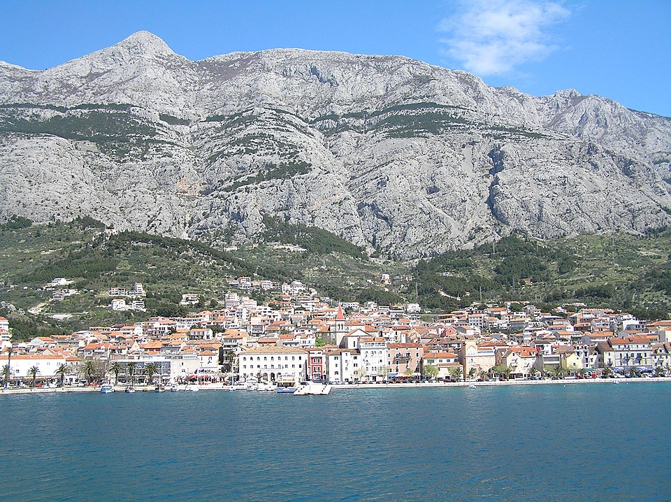
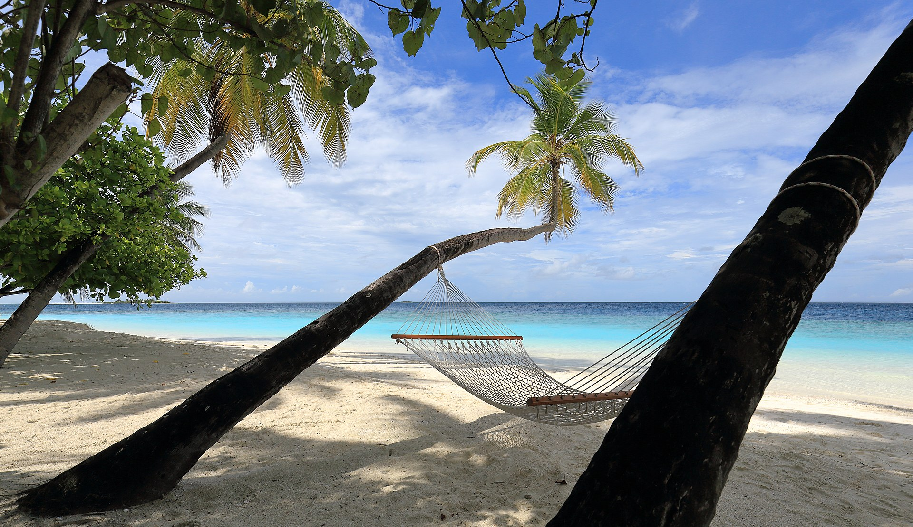
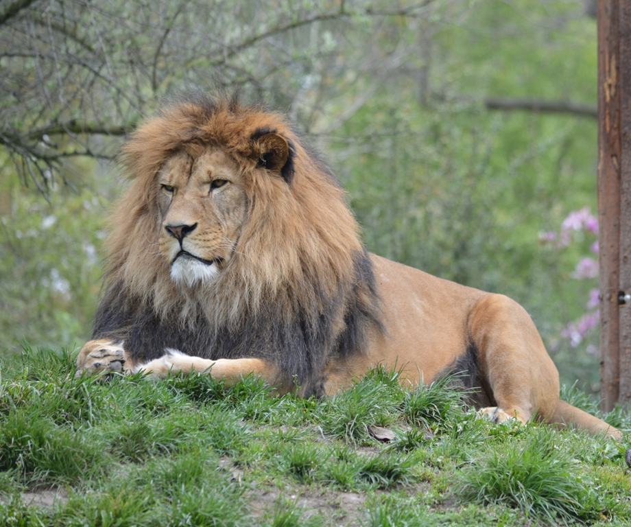

Nuestros Viajes
Al alcance de un clic
Exterior de la Mezquita Azul | Karelj,
CC BY-SA 3.0, vía Wikimedia Commons

Makarska, condado de Split-Dalmacia.| Sole,
CC BY-SA 3.0, vía Wikimedia Commons

Thudufushi, Atolón de Ari, Maldivas| Martin Falbisoner,
CC BY-SA 3.0, vía Wikimedia Commons

León del Atlas| Irbis75,
CC BY-SA 3.0, vía Wikimedia Commons